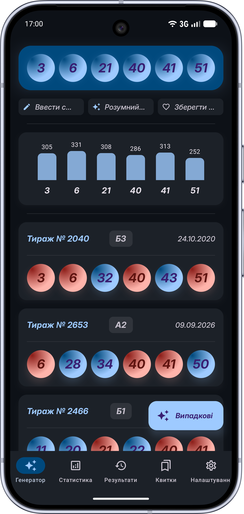
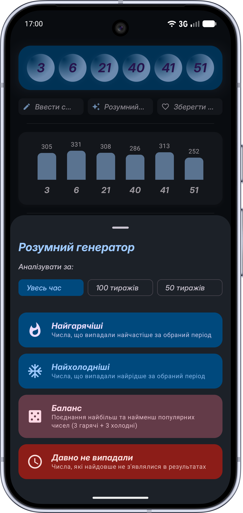
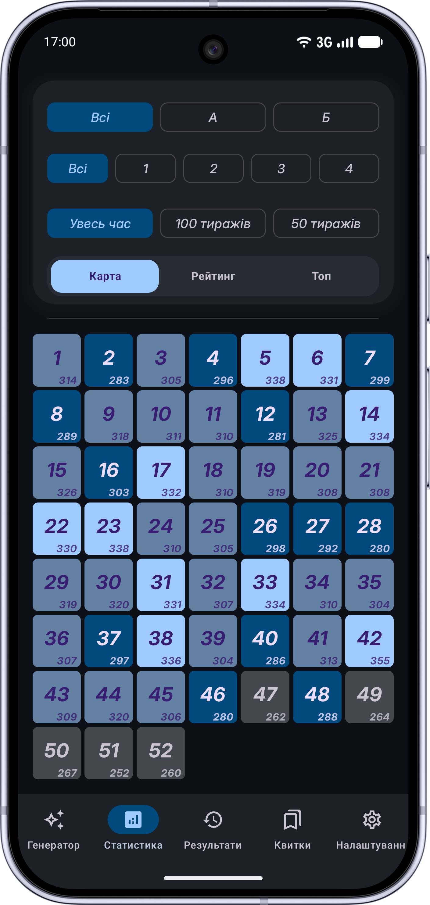
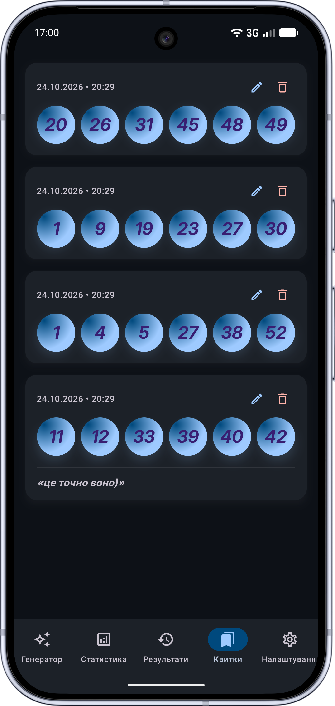

Математика замість сліпої випадковості.
Збалансовані комбінації чисел.
Припиніть грати абияк згенерованими числами з каси. Використовуйте статистику минулих тиражів, закріплюйте свої щасливі номери, фільтруйте перекоси парних/непарних та контролюйте суму комбінації.

Очікується скріншот:assets/super-loto/screen-main-uk.png
Цей додаток є незалежним математичним та статистичним інструментом і не має відношення до компанії УНЛ (Українська Національна Лотерея). Додаток не приймає грошові ставки, не продає лотерейні квитки та не виплачує виграші. Жоден генератор не гарантує виграш у лотерею. Мета додатку — надати інструменти теорії ймовірностей та балансування комбінацій. Грайте відповідально.
Чим «Розумний Генератор» відрізняється від автовибору
Коли ви берете випадковий білет у касі, генератор може видати абсурдну комбінацію, яка має вкрай низьку ймовірність випадіння в реальному тиражі.
- • Перекоси чисел: часто генерує тільки парні або тільки непарні числа (наприклад, 2, 8, 14, 26, 38, 50).
- • Аномальні суми: числа збиваються в один край діапазону (занадто малі або занадто великі), що в тиражах трапляється вкрай рідко.
- • Неможливо закріпити своє: якщо у вас є 1 чи 2 важливі дати, решту чисел доводиться дописувати вручну навмання.
- • Баланс парності: правильне співвідношення 3:3 або 4:2, яке відповідає 80% реальних тиражів.
- • Діапазон гармонійної суми: алгоритм відсікає екстремальні нереалістичні комбінації.
- • Гнучка фіксація: закріпіть свої улюблені номери, а решту додаток підбере з урахуванням фільтрів.
Інструменти для створення своєї стратегії
Гарячі та холодні номери
Аналізуйте, які кульки випадали найчастіше в останніх тиражах, а які знаходяться в «затишші» і давно не з'являлися на лототроні.
Фіксація улюблених чисел
Виберіть від 1 до 5 обов'язкових чисел, у яких ви впевнені. Алгоритм зафіксує їх і згенерує лише решту кульок за заданими правилами.
Фільтр парності та діапазонів
Налаштуйте суворі критерії: виключення послідовних чисел (наприклад, 12, 13, 14), обмеження по десятках та контроль суми комбінації.
Історія та збережені квитки
Зберігайте вдалі комбінації в пам'яті телефону. Більше не потрібно записувати числа на клаптиках паперу перед походом до точки продажу.
100% Автономність (Офлайн)
Генератор та вся локальна база працюють миттєво без підключення до інтернету. Додаток не гальмує і не потребує мобільної мережі.
Безпека та конфіденційність
Ніяких реєстрацій, номерів телефонів чи прив'язки карт. Ваші згенеровані комбінації залишаються виключно всередині вашого смартфона.
Зручний інтерфейс для швидкої генерації
Чітка візуалізація кульок, наочні фільтри та миттєва реакція на натискання.

screen-generator-uk.pngНалаштування фільтрів
Фільтри та налаштування комбінації

screen-stats-uk.pngСтатистика тиражів
Гарячі та холодні номери

screen-saved-uk.pngЗбережені варіанти
Збережені квитки для гри
Часті запитання
Чи гарантує додаток виграш у лотерею?
Ні. Жодна програма у світі не здатна гарантувати виграш у лото, оскільки кожен розіграш є випадковою подією. Додаток створений як аналітичний інструмент, який допомагає виключити статистично неправдоподібні варіанти та сформувати гармонійні комбінації.
Чи можна купити лотерейний квиток прямо в додатку?
Ні. Додаток не продає квитки і не проводить лотереї. Ви генеруєте комбінації в додатку, а потім переносите їх у квиток на офіційних точках продажу або на офіційному сайті оператора.
Чи потрібен інтернет для генерації чисел?
Ні. Усі алгоритми генерації, фільтри та локальна база збережених комбінацій працюють на 100% автономно на вашому телефоні.
Спробуйте розумний підхід до гри
Завантажуйте «Супер Лото Генератор» безкоштовно з Google Play та перевірте статистику прямо зараз.